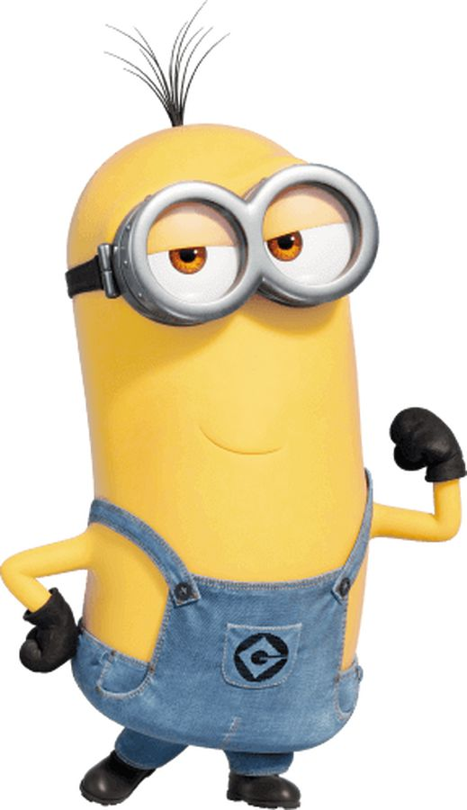

Kevin es uno de los personajes principales de la franquicia Mi villano favorito .Aparece en Mi villano favorito 2 , Mi villano favorito 3 , Ruedas de entrenamiento , las películas precuela Minions y Minions: El origen de Gru , Minions Paradise y Minions Oscars Segment 2016. Un minion con el mismo nombre , pero con una apariencia diferente, aparece en la primera película. Kevin es un secuaz alto, con dos ojos y el pelo cortado al estilo "sprout", y normalmente se le ve vistiendo su ropa de golf.

| Nombre | Color de ojos | Color de pelo | Voz |
|---|---|---|---|
| Kevin | Marron | Negro | Pierre Coffin |